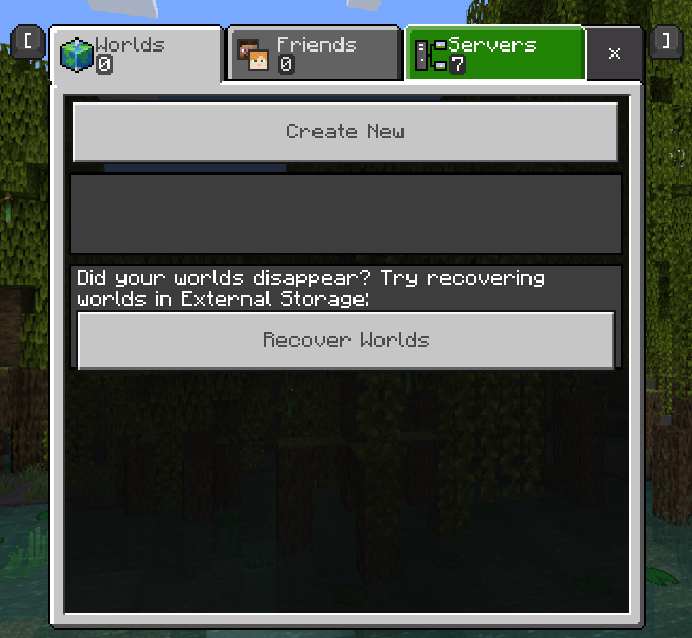
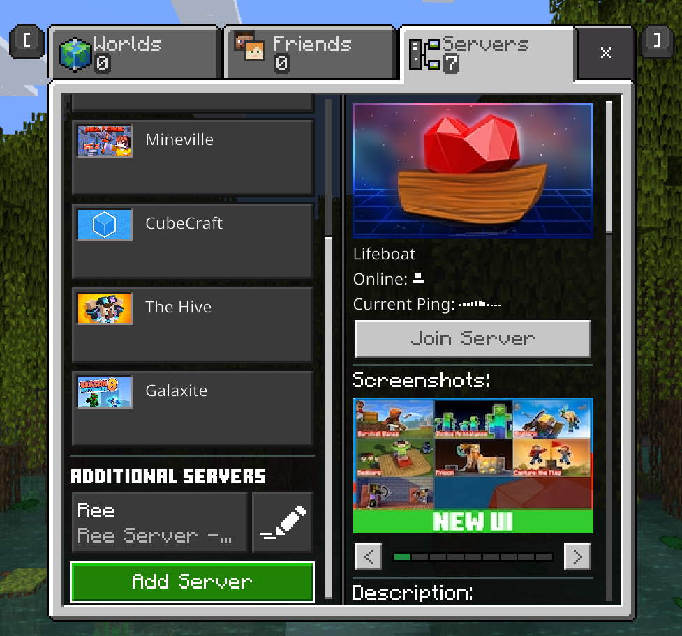
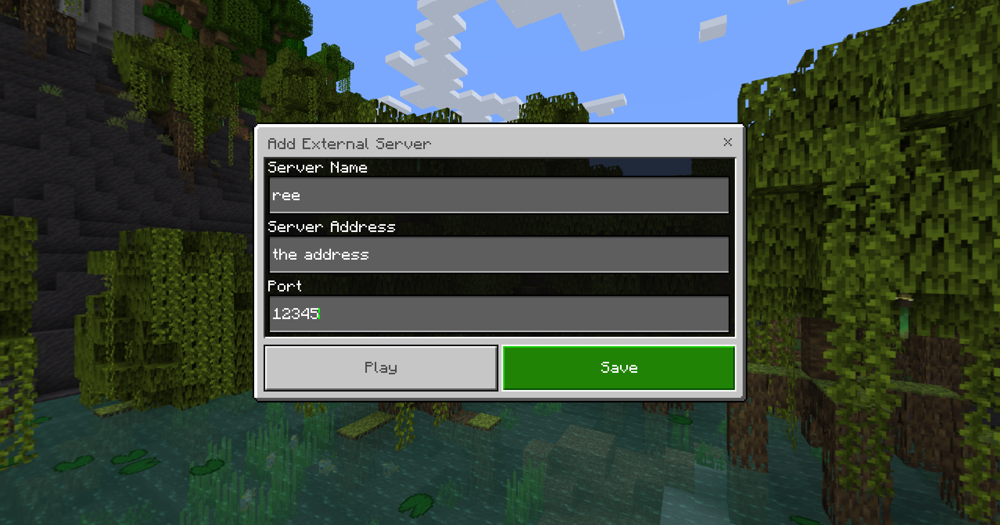

Connecting to a Minecraft Bedrock server is somewhat hard to find if you don't know what you're looking for. Unlike in Java edition, the direct connection controls are clearly an alternate option.
Step 1: Go to the Play menu
Open the Play menu. On the top right is the Servers tab.
Step 2: Go to the Servers tab
In the Play menu, select the Servers tab on the right. At the bottom of this tab you can add a direct connection to your server.
Step 3: Add your server
Add a new server from the Servers tab. You must give it a description, and then input the address and port number of the server. You can then play on the server or save it for later. Either way, it will now appear in the server list each time you open Minecraft.